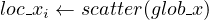

5.4 psb_scatter — Scatter Global Dense Matrix
These subroutines scatters the portions of global dense matrix owned by a process to
all the processes in the processes grid.

where:
-
glob_x
- is the global matrix glob_x1:m,1:n
-
loc_xi
- is the local portion of global dense matrix on process i.
-
scatter
- is the scatter function.
|
|
| xi,y | Subroutine |
|
|
| Integer | psb_scatter |
| Short Precision Real | psb_scatter |
| Long Precision Real | psb_scatter |
| Short Precision Complex | psb_scatter |
| Long Precision Complex | psb_scatter |
|
|
| |
Table 20: Data types
call psb_scatter(glob_x, loc_x, desc_a, info, root, mold)
-
Type:
- Synchronous.
-
On Entry
-
-
glob_x
- The array that must be scattered into local pieces.
Scope: global
Type: required
Intent: in.
Specified as: a rank one or two array.
-
desc_a
- contains data structures for communications.
Scope: local
Type: required
Intent: in.
Specified as: a structured data of type psb_desc_type.
-
root
- The process that holds the global copy. If root = -1 all the processes have
a copy of the global vector.
Scope: global
Type: optional
Intent: in.
Specified as: an integer variable -1 ≤ root ≤ np - 1, default psb_root_,
i.e. process 0.
-
mold
- The desired dynamic type for the internal vector storage.
Scope: local.
Type: optional.
Intent: in.
Specified as: an object of a class derived from psb_T_base_vect_type;
this is only allowed when loc_x is of type psb_T_vect_type.
-
On Return
-
-
loc_x
- the local portion of global dense matrix glob_x.
Scope: local
Type: required
Intent: out.
Specified as: a rank one or two ALLOCATABLE array or an object of type
psb_T_vect_type containing numbers of the type indicated in Table 20.
-
info
- Error code.
Scope: local
Type: required
Intent: out.
An integer value; 0 means no error has been detected.